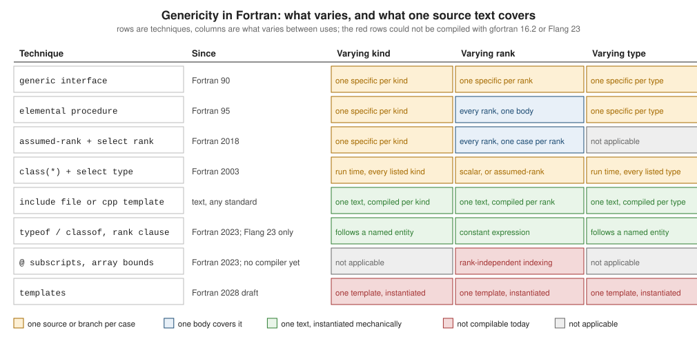

Generic and Rank Independent Programming
|
This content was generated with the assistance of AI and should be verified against the official documentation before being relied on in production. |
This page is written against Fortran 2023 (ISO/IEC 1539-1:2023, J3/23-007r1) and was checked on 2026-10-18. Every example
was compiled warning-free with gfortran -std=f2023 -Wall -Wextra -pedantic -fimplicit-none -fcheck=all (GNU Fortran 16.2)
and run, and also compiled and run with LLVM Flang 23; the output shown is real output. The exceptions are the Fortran 2023
features typeof, classof and the rank clause, which GNU Fortran 16.2 rejects and which are therefore labelled as
checked with Flang only, and the Fortran 2023 uses of integer arrays as subscripts and bounds, which neither compiler accepts:
those fragments are labelled unchecked and show the real diagnostics of both compilers. Examples that are deliberately
wrong or that deliberately fail at run time are labelled as such. The clauses cited are those of J3/23-007r1: types are in
clause 7.3, array declarations in 8.5.8 and 8.5.17, array sections in 9.5.3, allocate in 9.7.1, pointer assignment in
10.2.2, select rank and select type in 11.1.10 and 11.1.11, generic interfaces in 15.4.3.4, and elemental procedures in
15.9.
Fortran has no template or generic-programming facility in the standard of 2023. What it has is a set of smaller tools, each
covering one axis of variation, and one older and one new set of features for the axis that matters most in numerical code,
the rank of an array. This page covers what varies (a kind, a rank, a type), the tool that covers each, what each costs, and
what the Fortran 2023 additions change and which compilers accept them. The templates planned for Fortran 2028 are only
previewed here; see
What’s New and Fortran 2028 Preview. Background pages:
Interfaces, Generics and Operator Overloading
(generic resolution and distinguishability),
Array Arguments: Assumed Shape, Size and Rank
(assumed-shape, assumed-size and assumed-rank dummies in the usual setting), and
Object Oriented Programming (select type). The same problem
in other languages is covered by the C++ templates, the Rust
generics, the Go generics
and C type-generic programming pages.
| Tool | Covers | Since | Clause (J3/23-007r1) | gfortran 16.2 and Flang 23 |
|---|---|---|---|---|
Generic interface with |
kind, rank, type (one specific each) |
Fortran 90 |
15.4.3.4 |
both accept |
|
every rank, one body |
Fortran 95 |
15.9 |
both accept |
|
any type, at run time |
Fortran 2003 |
7.3.2.3, 11.1.11 |
both accept |
|
kind, rank, type, as text |
the |
6.4 |
both accept |
Assumed-rank |
every rank |
Fortran 2018 |
8.5.8.7, 11.1.10 |
both accept |
|
kind, type and type parameters follow another entity |
Fortran 2023 |
7.3.2.1 |
Flang accepts, gfortran rejects |
|
rank given by a constant expression |
Fortran 2023 |
8.5.17 |
Flang accepts, gfortran rejects |
|
rank-independent indexing and sectioning |
Fortran 2023 |
9.5.3.2 |
both reject |
Bounds and shapes from integer arrays (declarations, |
rank-independent shapes |
Fortran 2023 |
8.5.8.2, 9.7.1.1, 10.2.2.3 |
both reject |
|
rank-one view with arbitrary bounds |
Fortran 2023 |
18.2.3.3 |
both accept |
Templates and generic subprograms |
all of the above |
Fortran 2028 draft |
not in J3/23-007r1 |
not available |

What varies: kind, rank and type
Three things can differ between two uses of a computation, and Fortran handles them differently.
-
Kind.
real(sp)againstreal(dp): the same source text with a different kind parameter. The standard gives no way to write the kind as a parameter of a procedure (derived types can have kind parameters, see Parameterized Derived Types), so each kind needs its own copy of the code. The usual answer is a generated or hand-written copy behind a generic name (below). -
Rank. A scalar, a vector, a matrix. Before Fortran 2018 a procedure had a fixed rank for each dummy argument, and the same code for ranks 1 to 7 meant seven specifics.
elementalremoves the problem for pointwise operations, assumed-rank (Fortran 2018) for the rest. -
Type.
integer,real, a derived type. Unlimited polymorphism (class(*)) gives a run-time answer and has a cost; the other answer is again a copy per type.
A fourth thing, which these tools do not provide, is a constraint on the type parameter, the equivalent of a C++ concept, a Rust trait bound or a Go constraint: a Fortran generic simply fails to compile, or fails to resolve, when a specific does not fit. The Fortran 2028 draft adds requirements for this purpose (see the last section).
Generic interfaces: one specific per case
A generic interface (15.4.3.4) gives several procedures one name; a reference is resolved at compile time from the types,
kinds and ranks of the actual arguments (15.5.5.2), so there is no run-time cost. The standard requires the specifics to be
distinguishable (15.4.3.4.5); a different rank is enough, and so is a different kind. That is exactly the tool for
heatflow’s norms: the next program has a generic l2_norm over two kinds and two ranks, and therefore four specifics, each a
copy of the same single line of arithmetic.
module heatflow_kinds
use, intrinsic :: iso_fortran_env, only: real32, real64
implicit none
private
public :: sp, dp
integer, parameter :: sp = real32
integer, parameter :: dp = real64
end module heatflow_kinds
module heatflow_norms
use heatflow_kinds, only: sp, dp
implicit none
private
public :: l2_norm
! One public name, one specific per (kind, rank) pair: 2 kinds x 2 ranks.
interface l2_norm
module procedure l2_norm_sp_1, l2_norm_dp_1, l2_norm_sp_2, l2_norm_dp_2
end interface l2_norm
contains
pure function l2_norm_sp_1(u) result(r)
real(sp), intent(in) :: u(:)
real(sp) :: r
r = sqrt(sum(u**2))
end function l2_norm_sp_1
pure function l2_norm_dp_1(u) result(r)
real(dp), intent(in) :: u(:)
real(dp) :: r
r = sqrt(sum(u**2))
end function l2_norm_dp_1
pure function l2_norm_sp_2(u) result(r)
real(sp), intent(in) :: u(:,:)
real(sp) :: r
r = sqrt(sum(u**2))
end function l2_norm_sp_2
pure function l2_norm_dp_2(u) result(r)
real(dp), intent(in) :: u(:,:)
real(dp) :: r
r = sqrt(sum(u**2))
end function l2_norm_dp_2
end module heatflow_norms
program ex01_generic_by_kind_and_rank
use heatflow_kinds, only: sp, dp
use heatflow_norms, only: l2_norm
implicit none
real(dp) :: field(2,2)
real(sp) :: row(3)
field = reshape([3.0_dp, 0.0_dp, 0.0_dp, 4.0_dp], [2, 2])
row = [1.0_sp, 2.0_sp, 2.0_sp]
print '(a, f6.3)', 'rank 2, dp: ', l2_norm(field)
print '(a, f6.3)', 'rank 1, sp: ', l2_norm(row)
print '(a, f6.3)', 'rank 1, dp: ', l2_norm(real(row, dp))
! l2_norm(real(1, dp)) would be rejected: no specific accepts a scalar.
end program ex01_generic_by_kind_and_rankThe output, identical with both compilers:
rank 2, dp: 5.000
rank 1, sp: 3.000
rank 1, dp: 3.000The cost is the number of specifics, which is the product of the number of kinds, the number of ranks and the number of types
supported. Supporting real32, real64 and real128 for ranks 1 to 7 is 21 procedures per operation, which is why the
widely used numerical libraries generate these files from a template. The commented last line of the program shows that a
reference with no matching specific is a compile-time error, not a run-time one.
Elemental procedures and class(*)
An elemental procedure (15.9) is written for scalar dummy arguments and may be called with array actual arguments of any
rank, all of the same shape; the operation is applied to each element. It is pure unless declared impure elemental, so it
is the cheapest way to cover every rank, and the right one for pointwise code, a conversion or a function like sin. It does
not help with reductions, norms or anything that needs to see the whole array. The next program shows an elemental
Celsius-to-Kelvin conversion applied to a scalar, a vector and a matrix, and the other classical answer, an unlimited
polymorphic dummy (class(*), 7.3.2.3), which accepts an actual argument of any type and branches on its dynamic type with
select type (11.1.11).
module heatflow_kinds
use, intrinsic :: iso_fortran_env, only: real32, real64, int32
implicit none
private
public :: sp, dp, ip
integer, parameter :: sp = real32, dp = real64, ip = int32
end module heatflow_kinds
module heatflow_unlimited
use heatflow_kinds, only: sp, dp, ip
implicit none
private
public :: celsius_to_kelvin, describe
contains
! elemental: written for scalars, works for every rank (and is pure).
elemental function celsius_to_kelvin(t) result(k)
real(dp), intent(in) :: t
real(dp) :: k
k = t + 273.15_dp
end function celsius_to_kelvin
! class(*): one specific for every type, at the price of select type
! and of a run-time dispatch.
function describe(x) result(s)
class(*), intent(in) :: x
character(:), allocatable :: s
character(len=32) :: buf
select type (x)
type is (integer(ip))
write (buf, '(i0)') x
s = 'integer ' // trim(buf)
type is (real(sp))
write (buf, '(f0.2)') x
s = 'real(sp) ' // trim(buf)
type is (real(dp))
write (buf, '(f0.2)') x
s = 'real(dp) ' // trim(buf)
type is (character(*))
s = 'character "' // x // '"'
class default
s = 'unsupported type'
end select
end function describe
end module heatflow_unlimited
program ex02_elemental_and_class_star
use heatflow_kinds, only: sp, dp, ip
use heatflow_unlimited, only: celsius_to_kelvin, describe
implicit none
real(dp) :: t0, t1(3), t2(2,2)
t0 = 20.0_dp
t1 = [0.0_dp, 20.0_dp, 100.0_dp]
t2 = reshape([0.0_dp, 10.0_dp, 20.0_dp, 30.0_dp], [2, 2])
print '(f7.2)', celsius_to_kelvin(t0)
print '(3f8.2)', celsius_to_kelvin(t1)
print '(2f8.2)', celsius_to_kelvin(t2)
print '(a)', describe(42_ip)
print '(a)', describe(1.5_sp)
print '(a)', describe(2.5_dp)
print '(a)', describe('heat')
print '(a)', describe(.true.)
end program ex02_elemental_and_class_star 293.15
273.15 293.15 373.15
273.15 283.15
293.15 303.15
integer 42
real(sp) 1.50
real(dp) 2.50
character "heat"
unsupported typeThe class(*) version is not generic in the compile-time sense. The set of types is closed by the select type, the
dispatch happens at run time, the elements of an array cannot be handled without a rank-specific branch, and an unlimited
polymorphic actual argument has no kind to take: a procedure that wants real(sp) and real(dp) still has to list both.
It is the right tool for heterogeneous containers and for callbacks that carry an opaque user context (the Fortran equivalent of
void *), and the wrong one for numerical kernels.
Include files and preprocessor templates
The standard has an include line (6.4): the text of a file replaces the line before the program is processed. It is not a
statement and cannot be conditional, but it is enough for a template: a file written with a kind parameter that is defined by
the including scope. The next program includes the same file stats_body.inc into two modules, one that renames sp to wp
and one that renames dp to wp; a third module merges the two specifics under one generic name. The include file is:
! stats_body.inc -- included inside a module that has defined the kind "wp".
pure function mean_1d(u) result(m)
real(wp), intent(in) :: u(:)
real(wp) :: m
m = sum(u) / real(size(u), wp)
end function mean_1d
pure function range_1d(u) result(r)
real(wp), intent(in) :: u(:)
real(wp) :: r
r = maxval(u) - minval(u)
end function range_1dmodule heatflow_kinds
use, intrinsic :: iso_fortran_env, only: real32, real64
implicit none
private
public :: sp, dp
integer, parameter :: sp = real32, dp = real64
end module heatflow_kinds
! The same body is compiled twice, once per kind: the include file is the template.
module heatflow_stats_sp
use heatflow_kinds, only: wp => sp
implicit none
private
public :: mean_1d, range_1d
contains
include 'stats_body.inc'
end module heatflow_stats_sp
module heatflow_stats_dp
use heatflow_kinds, only: wp => dp
implicit none
private
public :: mean_1d, range_1d
contains
include 'stats_body.inc'
end module heatflow_stats_dp
! A third module renames the clashing specifics and merges them into generics.
module heatflow_stats
use heatflow_stats_sp, only: mean_sp => mean_1d, range_sp => range_1d
use heatflow_stats_dp, only: mean_dp => mean_1d, range_dp => range_1d
implicit none
private
public :: mean, range_of
interface mean
module procedure mean_sp, mean_dp
end interface mean
interface range_of
module procedure range_sp, range_dp
end interface range_of
end module heatflow_stats
program ex03_include_template
use heatflow_kinds, only: sp, dp
use heatflow_stats, only: mean, range_of
implicit none
real(sp) :: a(4) = [1.0_sp, 2.0_sp, 3.0_sp, 6.0_sp]
real(dp) :: b(3) = [10.0_dp, 20.0_dp, 60.0_dp]
print '(2(a, f6.2))', 'sp mean=', mean(a), ' range=', range_of(a)
print '(2(a, f6.2))', 'dp mean=', mean(b), ' range=', range_of(b)
end program ex03_include_templatesp mean= 3.00 range= 5.00
dp mean= 30.00 range= 50.00Two more points. First, because each module compiles the included text separately, the names must not collide when the two
modules are used together; the renaming mean_sp => mean_1d in the merging module is how the program above avoids a clash.
Second, the build system must know that every file that includes stats_body.inc depends on it; fpm and CMake do track
include files, a hand-written Makefile has to say so (see
Building with Make, CMake and Meson).
The other route is the preprocessor. It is not part of the Fortran standard, but every compiler runs a C-style preprocessor
on files whose suffix is .F90 (capital F), or on every file with -cpp. A macro can then generate a whole procedure for each
kind:
! Preprocessor genericity: the file suffix .F90 makes the compiler run cpp first.
module heatflow_kinds
use, intrinsic :: iso_fortran_env, only: real32, real64
implicit none
private
public :: sp, dp
integer, parameter :: sp = real32, dp = real64
end module heatflow_kinds
module heatflow_scale
use heatflow_kinds, only: sp, dp
implicit none
private
public :: scaled
interface scaled
module procedure scaled_sp, scaled_dp
end interface scaled
#define DEFINE_SCALED(NAME, KIND) \
pure function NAME(u, f) result(r); \
real(KIND), intent(in) :: u(:), f; \
real(KIND) :: r(size(u)); \
r = f * u; \
end function NAME
contains
DEFINE_SCALED(scaled_sp, sp)
DEFINE_SCALED(scaled_dp, dp)
end module heatflow_scale
program ex04_cpp_template
use heatflow_kinds, only: sp, dp
use heatflow_scale, only: scaled
implicit none
print '(3f6.1)', scaled([1.0_sp, 2.0_sp, 3.0_sp], 2.0_sp)
print '(3f6.1)', scaled([1.0_dp, 2.0_dp, 3.0_dp], 0.5_dp)
end program ex04_cpp_template 2.0 4.0 6.0
0.5 1.0 1.5A preprocessor template is the most flexible form of genericity and the least checked one: error messages refer to the
expanded text, editors and other tools cannot parse the macro, and cpp is a text tool that was designed for C, so how it
treats Fortran-specific text (continuation lines, //, the case of names) differs from one compiler to another. Keep
macros small, and put the logic in ordinary Fortran. The generated
approach is also common: fortran-lang’s stdlib keeps its numerical procedures in .fypp templates processed by the Fypp
preprocessor and ships the generated .F90; see
Fortran stdlib.
| Tool | Checked at compile time | Cost | Typical use |
|---|---|---|---|
Generic interface |
yes, per specific |
one procedure per kind, rank, type |
small libraries, wrappers |
|
yes |
none; one body |
pointwise functions |
|
partly: the branch list is checked, the type is not |
run-time dispatch, boxing |
opaque user context, containers |
|
yes, per instantiation |
text copy per instantiation; build dependency |
numerical kernels, a few kinds |
Preprocessor template |
after expansion |
text copy; poor diagnostics and tooling |
code generators, large matrices of kinds and ranks |
Assumed-rank dummy arguments and select rank
Fortran 2018 added the one feature that really is rank-independent, the assumed-rank dummy argument. It is declared with
(..) (8.5.8.7); an actual argument of any rank, including a scalar, may correspond to it (15.5.2.4), and the dummy takes
the rank and the extents of the actual argument, with every lower bound equal to one. Constraint C840 says what the dummy may
be used for: it can be passed to another assumed-rank dummy, be the first argument of an inquiry function (rank, size,
shape, lbound, ubound, is_contiguous, storage_size, …), be the argument of c_loc or c_sizeof from iso_c_binding, or be
the selector of select rank. It may not be subscripted, used in an expression, or assigned: the elements are reached by
narrowing the rank with select rank (11.1.10), which selects one block by the rank of the selector and, in that block,
gives the name the selected rank.
The next program does both. summarize only inquires, so one body handles every rank; total needs the elements and has to
list the ranks it supports, rank default catching the rest.
module heatflow_kinds
use, intrinsic :: iso_fortran_env, only: real64
implicit none
private
public :: dp
integer, parameter :: dp = real64
end module heatflow_kinds
module heatflow_inspect
use heatflow_kinds, only: dp
implicit none
private
public :: summarize, total
contains
! An assumed-rank dummy has the rank of its actual argument; the rank can be
! queried, but the elements can only be reached through select rank.
subroutine summarize(a)
real(dp), intent(in) :: a(..)
integer :: k
print '(a, i0, a, i0)', 'rank=', rank(a), ' size=', size(a)
do k = 1, rank(a)
print '(a, i0, a, i0, a, i0)', ' dim ', k, ': lbound=', lbound(a, k), ' extent=', size(a, k)
end do
end subroutine summarize
function total(a) result(s)
real(dp), intent(in) :: a(..)
real(dp) :: s
select rank (a)
rank (0)
s = a
rank (1)
s = sum(a)
rank (2)
s = sum(a)
rank (3)
s = sum(a)
rank default
error stop 'total: rank above 3 is not supported'
end select
end function total
end module heatflow_inspect
program ex05_assumed_rank
use heatflow_kinds, only: dp
use heatflow_inspect, only: summarize, total
implicit none
real(dp) :: scalar, line(5), plane(3, 4), block(2, 2, 2)
real(dp), allocatable :: w(:, :)
scalar = 7.0_dp
line = 1.0_dp
plane = 2.0_dp
block = 0.5_dp
allocate (w(0:2, -1:1))
w = 1.0_dp
call summarize(scalar)
call summarize(plane)
call summarize(w)
call summarize(line(2:4))
print '(4(a, f6.2))', 'scalar ', total(scalar), ' line ', total(line), ' plane ', total(plane), ' block ', total(block)
end program ex05_assumed_rankrank=0 size=1
rank=2 size=12
dim 1: lbound=1 extent=3
dim 2: lbound=1 extent=4
rank=2 size=9
dim 1: lbound=1 extent=3
dim 2: lbound=1 extent=3
rank=1 size=3
dim 1: lbound=1 extent=3
scalar 7.00 line 5.00 plane 24.00 block 4.00Notes on the output. The scalar has rank 0 and size 1; an array section line(2:4) has rank 1 and extent 3, and the dummy
sees it with lower bound 1 even though the allocatable w was declared with bounds 0:2 and -1:1; the bounds of the
actual argument are not passed for a nonallocatable, nonpointer assumed-rank dummy (15.5.2.4). An assumed-rank dummy with the
allocatable or pointer attribute is the exception: it has the bounds of the actual argument (8.5.8.4).
The select rank construct accepts three kinds of case: rank (n) for a rank n constant expression, rank (*) for an
assumed-size array (the selector is then of rank one), and rank default, which matches any other rank and leaves the
selector assumed-rank. At most one case per rank, one rank (*) and one rank default are allowed (C1157, C1158); a
rank (*) is not allowed when the selector is allocatable or a pointer (C1160). A rank above the maximum of 15 is
allowed in a case but never selected. A rank (n) case never matches an assumed-size actual argument; only rank (*) does,
and in its block the name is a rank-one assumed-size array. If no case matches and there is no rank default, control passes to
the end select without executing any block (11.1.10.2), silently, so give every select rank a rank default that either
handles the case or stops.
Misusing an assumed-rank dummy
The first program is deliberately non-conforming: it subscripts an assumed-rank dummy. GNU Fortran 16.2 refuses it at compile time; Flang 23 also rejects it, although its message reads as if the dummy were an array of a fixed rank.
! NON-CONFORMING ON PURPOSE: an assumed-rank dummy cannot be subscripted.
program err08_assumed_rank_element
implicit none
real :: a(2, 2)
a = 1.0
print *, first(a)
contains
function first(x) result(r)
real, intent(in) :: x(..)
real :: r
r = x(1, 1)
end function first
end program err08_assumed_rank_elementerr08_assumed_rank_element.f90:11:8:
11 | r = x(1, 1)
| 1
Error: Assumed-rank variable x at (1) may only be used as actual argumentFlang 23:
error: Semantic errors in err08_assumed_rank_element.f90
err08_assumed_rank_element.f90:11:9: error: Reference to rank-1 object 'x' has 2 subscripts
r = x(1, 1)
^^^^^^^The second is deliberately non-conforming for the same constraint (C840): the dummy is used as an operand.
! NON-CONFORMING ON PURPOSE: an assumed-rank dummy cannot be an argument of sum-like elemental code.
program err10_noselect
implicit none
real :: a(2, 2)
a = 1.0
print *, twice(a)
contains
function twice(x) result(r)
real, intent(in) :: x(..)
real :: r(size(x))
r = 2.0 * x
end function twice
end program err10_noselecterr10_noselect.f90:11:15:
11 | r = 2.0 * x
| 1
Error: Assumed-rank variable x at (1) may only be used as actual argumentFlang 23:
error: Semantic errors in err10_noselect.f90
err10_noselect.f90:11:9: error: An assumed-rank dummy argument is not allowed as an operand here
r = 2.0 * x
^^^^^^^The third is a run-time failure on purpose: select rank has branches for ranks 1 and 2 and a rank default that stops, and
the program calls it with a rank-4 array.
! Run-time failure on purpose: select rank without a branch for the actual rank.
program err09_rank_default
implicit none
real :: a(2, 2, 2, 2)
a = 1.0
print *, total(a)
contains
function total(x) result(s)
real, intent(in) :: x(..)
real :: s
select rank (x)
rank (1)
s = sum(x)
rank (2)
s = sum(x)
rank default
error stop 'total: unsupported rank'
end select
end function total
end program err09_rank_defaultGNU Fortran 16.2 prints the message and a backtrace and ends the program with exit status 1 (the addresses in the backtrace differ from run to run, so only the message is shown):
ERROR STOP total: unsupported rank
Error termination. Backtrace:Flang 23 prints:
Fortran ERROR STOP: total: unsupported rankRank-independent code without select rank
select rank only helps when each rank has its own body. The common case is code that does not care about the rank, that is
elementwise or a reduction over every element. For that, view the argument as one long vector and work on the vector: the
dummy must be contiguous, and c_loc (which accepts an assumed-rank argument, C840) and c_f_pointer do the
reshaping. The pointer is a rank-one view of the same memory, so the operation is in place.
module heatflow_kinds
use, intrinsic :: iso_fortran_env, only: real64
implicit none
private
public :: dp
integer, parameter :: dp = real64
end module heatflow_kinds
module heatflow_flat
use, intrinsic :: iso_c_binding, only: c_loc, c_f_pointer
use heatflow_kinds, only: dp
implicit none
private
public :: scale_any_rank
contains
! Rank-independent, in place: view the (contiguous) argument as a rank-one array.
subroutine scale_any_rank(a, factor)
real(dp), target, contiguous, intent(inout) :: a(..)
real(dp), intent(in) :: factor
real(dp), pointer, contiguous :: flat(:)
call c_f_pointer(c_loc(a), flat, [size(a)])
flat = factor * flat
end subroutine scale_any_rank
end module heatflow_flat
program ex06_flatten
use heatflow_kinds, only: dp
use heatflow_flat, only: scale_any_rank
implicit none
real(dp) :: v(3), m(2, 2), t(2, 2, 2)
v = 1.0_dp
m = reshape([1.0_dp, 2.0_dp, 3.0_dp, 4.0_dp], [2, 2])
t = 2.0_dp
call scale_any_rank(v, 10.0_dp)
call scale_any_rank(m, 10.0_dp)
call scale_any_rank(t, 10.0_dp)
print '(3f6.1)', v
print '(2f6.1)', m
print '(8f6.1)', t
end program ex06_flatten 10.0 10.0 10.0
10.0 20.0
30.0 40.0
20.0 20.0 20.0 20.0 20.0 20.0 20.0 20.0Three conditions apply. The dummy needs the target attribute, because c_loc needs a target, and contiguous, because
c_loc requires a contiguous array (18.2.3.7). Passing a noncontiguous section, such as the row m(2, :) of a 3 by 3 matrix, makes
the compiler copy it in and out, so the result is still correct for intent(inout), at the price of a temporary; gfortran
with -fcheck=all reports it at run time as Fortran runtime warning: An array temporary was created, and Flang 23 says
nothing. And the argument cannot be a polymorphic object or of a non-interoperable type for c_loc, which is a restriction of
the technique, not of assumed rank. Where the standard of an older version applies, a classic alternative is reshape, which copies; the
c_f_pointer view does not.
typeof and classof
Fortran 2023 adds two type specifiers (7.3.2.1) that name the type of another entity instead of repeating its declaration:
typeof (data-ref) declares an entity of the same type and type parameters as the data-ref, and classof (data-ref)
declares a polymorphic entity of the same declared type. They may be used in type declaration statements and component
definitions, and the data-ref must be declared before. The rules are constraints C708 to C713:
-
an entity declared with
classorclassofis a dummy argument or has theallocatableorpointerattribute (C708); -
typeofandclassofappear only in a type declaration statement or component definition (C709); -
the data-ref has its type and type parameters declared earlier (C710);
-
typeofdoes not accept an unlimited polymorphic or abstract data-ref, andclassofdoes not accept an assumed-type or intrinsic-type one (C711, C712); -
for an
optionaldata-ref neither may have a deferred or assumed type parameter (C713).
Only the type and type parameters are taken: the rank, the allocatable, pointer and intent attributes are not (the
data-ref may be an array, and a typeof of it is a scalar), and if the data-ref has an assumed type parameter the new entity
has the same value, not an assumed one (Note 2). The use is exactly the one that the kind axis needs: the kind of a
temporary, an accumulator or a function result follows a dummy argument, and with a generic and a macro-free source the
declarations of the specifics cannot get out of step.
GNU Fortran 16.2 does not accept these specifiers; LLVM Flang 23 does. The next program was therefore compiled and run with Flang 23 only.
module heatflow_kinds
use, intrinsic :: iso_fortran_env, only: real32, real64
implicit none
private
public :: sp, dp
integer, parameter :: sp = real32, dp = real64
end module heatflow_kinds
module heatflow_typeof
use heatflow_kinds, only: sp, dp
implicit none
private
public :: grid_t, mean_of, clone
type :: grid_t
integer :: nx = 0
real(dp), allocatable :: u(:, :)
end type grid_t
interface mean_of
module procedure mean_sp, mean_dp
end interface mean_of
contains
! typeof(u): the accumulator and the result follow the kind of u. The
! declaration is written once; only the dummy argument names the kind.
function mean_sp(u) result(m)
real(sp), intent(in) :: u(:)
typeof(u) :: m
typeof(u) :: acc
acc = sum(u)
m = acc / size(u)
end function mean_sp
function mean_dp(u) result(m)
real(dp), intent(in) :: u(:)
typeof(u) :: m
typeof(u) :: acc
acc = sum(u)
m = acc / size(u)
end function mean_dp
! classof(g): polymorphic with the declared type of g; with class(grid_t)
! this would be written twice, here it follows the argument.
function clone(g) result(copy)
class(grid_t), intent(in) :: g
classof(g), allocatable :: copy
allocate (copy, source=g)
end function clone
end module heatflow_typeof
program ex07_typeof_classof
use heatflow_kinds, only: sp, dp
use heatflow_typeof, only: grid_t, mean_of, clone
implicit none
type(grid_t) :: g
class(grid_t), allocatable :: h
g%nx = 2
allocate (g%u(2, 2))
g%u = 5.0_dp
h = clone(g)
h%u = 1.0_dp
print '(a, f5.1, a, f5.1)', 'original ', g%u(1, 1), ' clone ', h%u(1, 1)
print '(a, f5.2)', 'mean sp ', mean_of([1.0_sp, 2.0_sp, 6.0_sp])
print '(a, f5.2)', 'mean dp ', mean_of([1.0_dp, 2.0_dp, 6.0_dp])
end program ex07_typeof_classofOutput with Flang 23:
original 5.0 clone 1.0
mean sp 3.00
mean dp 3.00GNU Fortran 16.2 stops at the first use of typeof, with a message that does not name the feature:
! F2023 typeof: accepted by Flang 23, rejected by gfortran 16.2.
program err05_typeof
implicit none
real(kind(1.0d0)) :: x(3) = [1.0d0, 2.0d0, 3.0d0]
typeof(x) :: y
y = x(2)
print *, y
end program err05_typeoferr05_typeof.f90:5:7:
5 | typeof(x) :: y
| 1
Error: Mangled derived type definition at (1)
err05_typeof.f90:6:3:
6 | y = x(2)
| 1
Error: Symbol 'y' at (1) has no IMPLICIT typeand at classof, where it does not even recognise a statement:
! F2023 classof: accepted by Flang 23, rejected by gfortran 16.2.
module shapes
implicit none
type :: shape_t
real :: s = 1.0
end type shape_t
contains
function clone(a) result(b)
class(shape_t), intent(in) :: a
classof(a), allocatable :: b
allocate (b, source=a)
end function clone
end module shapeserr06_classof.f90:10:5:
10 | classof(a), allocatable :: b
| 1
Error: Unclassifiable statement at (1)
err06_classof.f90:11:15:
11 | allocate (b, source=a)
| 1
Error: Allocate-object at (1) is neither a data pointer nor an allocatable variable
err06_classof.f90:8:29:
8 | function clone(a) result(b)
| 1
Error: Result 'b' of contained function 'clone' at (1) has no IMPLICIT typeFlang 23 compiled the module above (flang-23 -c) without messages. The Fortran 2023 text of Note 2 and the constraints are in
7.3.2.1; Flang’s own status table lists typeof and classof as supported. Until gfortran accepts them, keep the kind in a
named constant of a kinds module and use that, as the other pages of this section do.
The rank clause
The second Fortran 2023 addition to declarations is the rank clause (8.5.17, R829): rank (scalar-int-constant-expr)
gives an entity its rank without writing a list of colons, and the expression may use the rank intrinsic of another
entity. It is an alternative to the dimension attribute. An entity declared with it is a dummy data object or has the
allocatable or pointer attribute (C864), and the expression is nonnegative and not greater than the maximum rank (C863):
-
rank zero gives a scalar;
-
with
allocatableorpointerthe entity is a deferred-shape array of that rank; -
otherwise (a dummy argument) it is an assumed-shape array of that rank with all lower bounds equal to one.
Together with typeof it lets a declaration follow another entity completely, typeof (a), rank (rank (a)), allocatable :: b,
without a macro or a list of colons that has to be edited when the rank changes. The next program, again Flang only,
declares a dummy of rank two and an allocatable result with the same rank.
module heatflow_kinds
use, intrinsic :: iso_fortran_env, only: real64
implicit none
private
public :: dp
integer, parameter :: dp = real64
end module heatflow_kinds
module heatflow_rank
use heatflow_kinds, only: dp
implicit none
private
public :: relabel
contains
! rank(rank(ref)): the dummy and the allocatable result have the rank of ref,
! decided by a constant expression instead of a column of colons.
subroutine relabel(ref, copy)
real(dp), rank(2), intent(in) :: ref
real(dp), rank(rank(ref)), allocatable, intent(out) :: copy
allocate (copy, mold=ref)
copy = -ref
end subroutine relabel
end module heatflow_rank
program ex08_rank_clause
use heatflow_kinds, only: dp
use heatflow_rank, only: relabel
implicit none
real(dp) :: u(0:1, 0:2)
real(dp), allocatable :: v(:, :)
u = 3.0_dp
call relabel(u, v)
print '(a, 2i2, a, f5.1)', 'shape(v) =', shape(v), ' v(1,1) =', v(1, 1)
end program ex08_rank_clauseOutput with Flang 23:
shape(v) = 2 3 v(1,1) = -3.0GNU Fortran 16.2 rejects the clause as an invalid name after the attribute comma:
! F2023 rank clause: accepted by Flang 23, rejected by gfortran 16.2.
program err07_rank_clause
implicit none
real, rank(3), allocatable :: x
allocate (x(2, 2, 2))
print *, rank(x)
end program err07_rank_clauseerr07_rank_clause.f90:4:8:
4 | real, rank(3), allocatable :: x
| 1
Error: Invalid character in name at (1)
err07_rank_clause.f90:5:13:
5 | allocate (x(2, 2, 2))
| 1
Error: Allocate-object at (1) is neither a data pointer nor an allocatable variable
err07_rank_clause.f90:6:17:
6 | print *, rank(x)
| 1
Error: Symbol 'x' at (1) has no IMPLICIT type
err07_rank_clause.f90:6:17:
6 | print *, rank(x)
| 1
Error: Symbol 'x' at (1) has no IMPLICIT typeFlang 23 accepts it and prints 3. The rank clause is the Fortran 2023 item that Flang’s table marks as supported ("Using an
integer constant to specify rank").
Source: J3/23-007r1, 8.5.17 RANK clause
Two remarks. The rank of a scalar is 0, so rank (rank (n)) for a scalar n declares a scalar; code that expects a
rank-one array there (for instance a bounds vector sized by rank(n)) ends up with a zero-sized or scalar entity, which is a
classic mistake. And ubound takes the dimension as its own argument: the correct call is ubound (a, rank (a)), not a
section.
Integer arrays as subscripts, bounds and shapes
The remaining Fortran 2023 items let a rank-one integer array stand for a list of scalar expressions, so that code which manipulates a rank only through a vector of subscripts or extents does not depend on that rank. The syntax in the standard (clause numbers refer to J3/23-007r1) is:
| Place | Form (the arrays have rank one and constant size equal to the rank of the object) | Clause |
|---|---|---|
Array element or section |
|
9.5.3.1, 9.5.3.2 |
Explicit-shape and assumed-shape declarations |
|
8.5.8.2, 8.5.8.3 |
|
|
9.7.1.1, 9.7.1.2 |
Pointer assignment |
|
10.2.2.2, 10.2.2.3 |
A multiple subscript expands in place to as many subscripts as the array has elements, so a(@[2, 3, 1]) is a(2, 3, 1)
and a @ list sits between ordinary subscripts. Triplets expand the same way; an omitted first or second array takes the
lower or upper bounds of the corresponding dimensions. The point of all this is that a procedure with an assumed-rank
argument can index it, which select rank could do only one rank at a time.
Neither GNU Fortran 16.2 nor Flang 23 accepts any of them. Flang’s standards table marks "Using integer arrays to specify subscripts" and "Using integer arrays to specify rank and bound of an array" as not implemented, and the diagnostics confirm it. The four fragments below were therefore not compiled successfully with either compiler: they are unchecked against the syntax rules in J3/23-007r1, and are shown with the real diagnostics of both compilers. Each is a complete program.
Multiple subscripts (9.5.3.2):
! UNCHECKED F2023 SYNTAX: multiple subscripts (9.5.3.2). Rejected by gfortran 16.2 and Flang 23.
program err01_at_subscript
implicit none
real :: a(3, 3, 3)
integer, parameter :: idx(3) = [2, 3, 1]
a = 0.0
a(@idx) = 1.0
print *, sum(a(@[1, 1]:[2, 2], 1))
end program err01_at_subscriptgfortran 16.2:
err01_at_subscript.f90:7:5:
7 | a(@idx) = 1.0
| 1
Error: Expected array subscript at (1)
err01_at_subscript.f90:8:18:
8 | print *, sum(a(@[1, 1]:[2, 2], 1))
| 1
Error: Expected array subscript at (1)Flang 23:
error: Semantic errors in err01_at_subscript.f90
err01_at_subscript.f90:7:5: error: No explicit type declared for '@idx'
a(@idx) = 1.0
^^^^
err01_at_subscript.f90:8:18: error: No explicit type declared for '@'
print *, sum(a(@[1, 1]:[2, 2], 1))
^
err01_at_subscript.f90:8:26: error: Must be a scalar value, but is a rank-1 array
print *, sum(a(@[1, 1]:[2, 2], 1))
^^^^^^Bounds array in allocate (9.7.1.1):
! UNCHECKED F2023 SYNTAX: ALLOCATE with a bounds array (9.7.1.1). Rejected by gfortran 16.2 and Flang 23.
program err02_allocate_bounds
implicit none
real, allocatable :: a(:, :, :)
integer :: sh(3)
sh = [2, 3, 4]
allocate (a(sh))
print *, shape(a)
end program err02_allocate_boundsgfortran 16.2:
err02_allocate_bounds.f90:7:13:
7 | allocate (a(sh))
| 1
Error: Rank mismatch in array reference at (1) (1/3)Flang 23:
error: Semantic errors in err02_allocate_bounds.f90
err02_allocate_bounds.f90:7:13: error: The number of shape specifications, when they appear, must match the rank of allocatable object
allocate (a(sh))
^
err02_allocate_bounds.f90:4:24: Declared here with rank 3
real, allocatable :: a(:, :, :)
^
err02_allocate_bounds.f90:7:15: error: Must be a scalar value, but is a rank-1 array
allocate (a(sh))
^^Bounds arrays in pointer assignment (10.2.2.3):
! UNCHECKED F2023 SYNTAX: pointer bounds from arrays (10.2.2.3). Rejected by gfortran 16.2 and Flang 23.
program err03_pointer_bounds
implicit none
real, target :: t(24)
real, pointer :: p(:, :, :)
integer, parameter :: lb(3) = [0, 0, 0], ub(3) = [1, 2, 3]
p(lb:ub) => t
print *, shape(p)
end program err03_pointer_boundsgfortran 16.2:
err03_pointer_bounds.f90:7:4:
7 | p(lb:ub) => t
| 1
Error: Array index at (1) must be scalarFlang 23:
error: Semantic errors in err03_pointer_bounds.f90
err03_pointer_bounds.f90:7:5: error: Must be a scalar value, but is a rank-1 array
p(lb:ub) => t
^^
err03_pointer_bounds.f90:7:8: error: Must be a scalar value, but is a rank-1 array
p(lb:ub) => t
^^Bounds from an array in a declaration (8.5.8.2):
! UNCHECKED F2023 SYNTAX: bounds from an array in a declaration (8.5.8.2). Rejected by gfortran 16.2 and Flang 23.
program err04_shape_decl
implicit none
integer, parameter :: sh(3) = [2, 3, 4]
real :: a(sh)
print *, shape(a)
end program err04_shape_declgfortran 16.2:
err04_shape_decl.f90:5:15:
5 | real :: a(sh)
| 1
Error: Explicit shaped array with nonconstant bounds at (1)
err04_shape_decl.f90:6:18:(the remaining two lines of its output only repeat that a was not declared). Flang 23:
error: Semantic errors in err04_shape_decl.f90
err04_shape_decl.f90:5:3: error: not yet implemented: TODO: Analyze overload for ExplicitShapeBoundsSpec
real :: a(sh)
^^^^^^^^^^^^^The Flang message for the last one, "not yet implemented", is the compiler’s own statement that the construct is parsed but not supported yet. In the others the compiler reads the bounds array as a single scalar subscript.
What works today for the same jobs
Two of the jobs have a standard-conforming route. The first is a rank-one view with arbitrary lower bounds, which the
Fortran 2023 lower= argument of c_f_pointer (18.2.3.3) provides: the extents and the lower bounds are rank-one integer
arrays, as in the unchecked pointer assignment above. The second is an allocation whose rank is known by a select rank
branch (here on an allocatable assumed-rank dummy) and whose extents are the elements of a vector.
module heatflow_kinds
use, intrinsic :: iso_fortran_env, only: real64
implicit none
private
public :: dp
integer, parameter :: dp = real64
end module heatflow_kinds
module heatflow_reshape
use, intrinsic :: iso_c_binding, only: c_loc, c_f_pointer
use heatflow_kinds, only: dp
implicit none
private
public :: view_3d, make_like
contains
! Bounds taken from integer arrays, with the Fortran 2023 c_f_pointer
! (its lower argument is new in F2023; shape and lower are rank-one arrays) instead of the F2023
! bounds-array form of pointer assignment that no compiler accepts yet.
subroutine view_3d(flat, extents, lowers, view)
real(dp), target, contiguous, intent(in) :: flat(:)
integer, intent(in) :: extents(3), lowers(3)
real(dp), pointer, contiguous, intent(out) :: view(:, :, :)
call c_f_pointer(c_loc(flat), view, extents, lowers)
end subroutine view_3d
! Allocation with a shape that is data: select rank turns the rank-one
! array of extents into the right number of allocate-shape-specs.
subroutine make_like(shp, a)
integer, intent(in) :: shp(:)
real(dp), allocatable, intent(out) :: a(..)
select rank (a)
rank (1)
allocate (a(shp(1)))
rank (2)
allocate (a(shp(1), shp(2)))
rank (3)
allocate (a(shp(1), shp(2), shp(3)))
rank default
error stop 'make_like: rank not supported'
end select
end subroutine make_like
end module heatflow_reshape
program ex09_bounds_from_arrays
use heatflow_kinds, only: dp
use heatflow_reshape, only: view_3d, make_like
implicit none
real(dp), target :: store(24)
real(dp), pointer, contiguous :: v(:, :, :)
real(dp), allocatable :: w(:, :)
integer :: i
store = [(real(i, dp), i=1, 24)]
call view_3d(store, [2, 3, 4], [0, 0, 0], v)
print '(a, 3i2, a, 3i2)', 'shape ', shape(v), ' lbound ', lbound(v)
print '(a, f5.1)', 'v(0,0,0) = ', v(0, 0, 0)
print '(a, f5.1)', 'v(1,2,3) = ', v(1, 2, 3)
call make_like([3, 5], w)
print '(a, 2i2)', 'shape(w) = ', shape(w)
end program ex09_bounds_from_arraysshape 2 3 4 lbound 0 0 0
v(0,0,0) = 1.0
v(1,2,3) = 24.0
shape(w) = 3 5The lower= argument is itself a Fortran 2023 addition, and both GNU Fortran 16.2 and Flang 23 accept it, as the output shows.
The view pointer has bounds 0:1, 0:2 and 0:3, with the first element of store at v(0,0,0). For a scalar-shaped
shape argument the same call can serve any fixed rank; the rank of the pointer, as before, must be known at compile time.
Choosing a technique
The decision depends on what varies and on whether the compilers in use accept the Fortran 2023 items.
Fortran 2028 templates
The Fortran 2028 draft is the first to address the problem directly. The latest public working draft is J3/26-007r1 (3 March
2026). Its clause 16, "Templates, requirements, and instantiation", defines the template construct (16.1) with deferred
arguments (16.4), which are the parameters of the template, the instantiate statement and inline instantiation of
templated procedures (16.5), and the requirement construct and require statement (16.6, 16.7), which state what a deferred
argument must provide and are the counterpart of a constraint or concept. The draft also adds generic subprograms, with the
select generic rank construct (11.1.10 in the draft) and a select generic type construct, and a default kind statement.
The Fortran 2023 items of this page reappear there: the rank clause and the rank intrinsic are what lets a templated
procedure declare an entity whose rank depends on a deferred argument, and the draft calls such an entity implied-rank.
No compiler implements any of it, so this page has no example for it and does not describe the syntax further, because the draft may still change before publication (targeted for the second half of 2028); the clause numbers above are those of the working draft. The planned status, the proposals and a longer discussion are on What’s New and Fortran 2028 Preview. Until then, the tools of this page are the available ones.
Compiler support
The following was verified on 2026-10-18 with the examples above; "not verified" means that no compiler of that family was available for this page.
| Feature | GNU Fortran 16.2 | LLVM Flang 23 | Other compilers |
|---|---|---|---|
Generic interfaces, |
accepted |
accepted |
not verified |
Preprocessing of |
accepted |
accepted |
not verified |
Assumed-rank |
accepted |
accepted |
not verified |
Allocatable assumed-rank dummy (F2018) |
accepted |
accepted |
not verified |
|
accepted |
accepted |
not verified |
|
accepted |
accepted |
not verified |
|
rejected: "Mangled derived type definition" and "Unclassifiable statement" |
accepted |
not verified |
|
rejected: "Invalid character in name" |
accepted |
not verified |
|
rejected |
rejected |
not verified |
Integer arrays for bounds in |
rejected |
rejected, declarations "not yet implemented" |
not verified |
The GNU Fortran manual has no Fortran 2023 status page, so the statement for gfortran is the result of compiling the examples, and it will change with a newer release. Flang’s own table is in the Flang documentation referenced below.
Standard-version provenance
| Feature | Standard | Notes |
|---|---|---|
Generic interfaces, |
Fortran 90 |
Resolution by type, kind and rank; the rules for distinguishing specifics were widened in Fortran 2008 and 2018. |
|
Fortran 95 |
|
|
Fortran 2003 |
Unlimited polymorphism. |
|
Fortran 90 |
Not a statement (6.4). |
Assumed-rank |
Fortran 2018 |
Incorporated from the Technical Specification on further interoperability of Fortran with C. |
|
Fortran 2018 |
C840. |
|
Fortran 2023 |
7.3.2.1, 8.5.17. |
|
Fortran 2023 |
9.5.3.2, 8.5.8.2, 9.7.1.1, 10.2.2.3. |
|
Fortran 2023 |
18.2.3.3. |
Templates, requirements, generic subprograms |
Fortran 2028 draft |
J3/26-007r1, clause 16. |
Where the books are outdated
The reference book for this section, Modern Fortran Explained: Incorporating Fortran 2023, treats the language of this page, up to the Fortran 2023 specifiers and rank facilities and an outlook on templates. The points to know when learning from it are the following.
-
The book is about the language, not the compilers. Of everything in the last chapters, only
c_f_pointerwithlower=and the F2018 assumed-rank facilities work on both compilers used for this page;typeof,classofand therankclause work on Flang 23 only, and the integer-array subscripts and bounds on neither. This page supplies those facts and the diagnostics. -
The book’s account of templates is a forward look at a possible future feature. The Fortran 2028 draft has since made them a clause of its own, with requirements and generic subprograms; they are previewed above and on the preview page.
-
Two printed passages in the book’s Fortran 2023 material are known to be wrong and should not be copied: a call to
uboundthat passes a section where the dimension argument belongs, and a declaration that sizes an array with the rank of a scalar, which is zero-sized because the rank of a scalar is 0 (see the remark under the rank clause). Copy from the standard instead, and check the errata file on the book’s site. -
The book’s appendix of the authors' own recommendations advises against
includefiles and the preprocessor; these are the authors' preferences, not obsolescent features.includeis standard, and the preprocessor is a common, if nonstandard, tool for kind-generic code. -
Older tutorials teach assumed-size arrays and one specific per rank as the only way to be rank-independent, and
transfer-based tricks for the rest; assumed-rank dummies andselect rankmake both unnecessary for new code.
Common mistakes at a glance
| Mistake | Symptom | Fix |
|---|---|---|
Subscripting or using an assumed-rank dummy in an expression |
compile error "may only be used as actual argument" |
Use |
|
a rank that has no case skips the whole construct, so a result set inside it keeps no value |
Always add |
Passing a noncontiguous section to a |
a temporary copy in and out; gfortran with |
Check |
Using |
compile error |
Declare the dummy |
Expecting |
one |
Use a generic interface or a template for numerical kernels. |
Writing |
rejected by gfortran 16.2 |
Use a kinds module, a |
|
zero-sized or scalar entity, no diagnostic |
Use |
Two include-file instantiations that export the same name |
ambiguous reference or duplicate declaration |
Rename on |
A macro in a |
the |
Use the suffix |
References
-
J3/23-007r1: Fortran 2023 final draft (6.4, 7.3.2.1, 7.3.2.3, 8.5.8, 8.5.17, 9.5.3, 9.7.1, 10.2.2, 11.1.10, 11.1.11, 15.4.3.4, 15.5.2.4, 15.9, 18.2.3)
-
J3/26-007r1: Fortran 2028 working draft (templates and generic subprograms)
-
WG5 N2212: The new features of Fortran 2023 (typeof and classof, the rank clause, integer arrays as subscripts and bounds)
-
WG5 N2161: The new features of Fortran 2018 (assumed rank and select rank)
-
GNU Fortran: Options to request or suppress errors and warnings
-
Oxford University Press: Modern Fortran Explained, Incorporating Fortran 2023